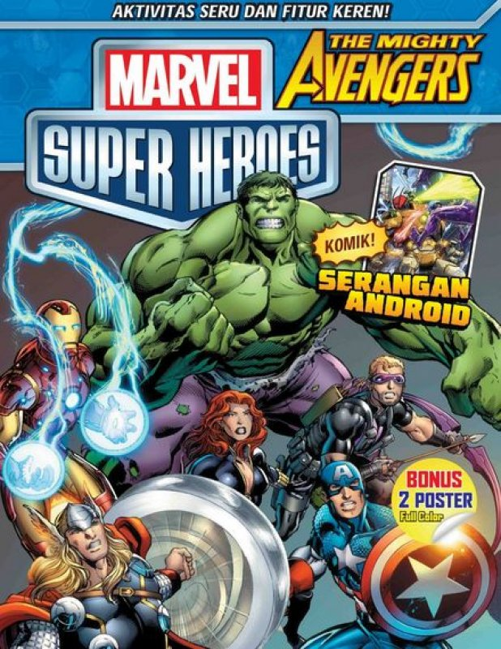
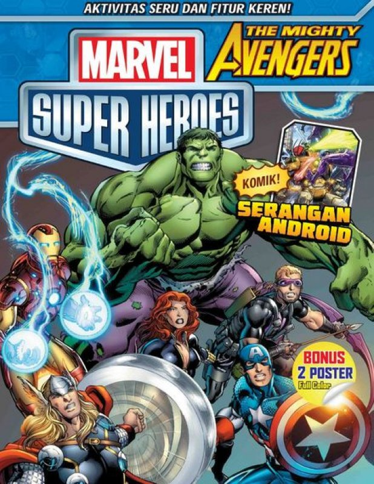

Comic Life
Tentang Komik

Komik adalah sebuah media naratif visual yang menggunakan gambar dan teks untuk menceritakan suatu cerita. Komik biasanya terdiri dari beberapa panel gambar yang disusun secara berurutan, di mana tiap panel menggambarkan satu adegan atau satu momen dalam cerita.
Komik biasanya dibaca dari kiri ke kanan, dan dari atas ke bawah (dalam bahasa Inggris, pembacaan seperti ini disebut dengan "reading direction"). Meskipun kebanyakan komik berasal dari Jepang (dikenal dengan nama "manga") atau Amerika Serikat (dikenal dengan nama "comic"), namun komik juga ada di berbagai negara lain dengan beragam jenis dan gaya yang berbeda.
Komik dapat berisi cerita fiksi maupun non-fiksi, dan sering kali digunakan sebagai media untuk menghibur dan mengedukasi pembaca. Beberapa komik juga telah diadaptasi menjadi film atau serial televisi, seperti Marvel Cinematic Universe dan DC Extended Universe.
Genre Komik
Ada banyak macam-macam genre komik, di antaranya:
- Aksi (Action): Komik yang menampilkan banyak adegan aksi, pertarungan, dan kekerasan. Biasanya komik ini mengisahkan petualangan para pahlawan yang berjuang melawan musuh-musuhnya.
- Petualangan (Adventure): Komik yang menampilkan petualangan para tokoh utama yang menghadapi berbagai rintangan dan tantangan. Biasanya komik ini menampilkan cerita yang seru dan menghibur.
- Drama: Komik yang menampilkan kisah-kisah yang penuh emosi, seperti kisah cinta, persahabatan, dan perjuangan hidup. Biasanya komik ini mengandung pesan moral yang mendalam.
- Komedi (Comedy): Komik yang menampilkan cerita lucu dan menghibur. Biasanya komik ini memiliki plot yang sederhana namun menggelitik.
- Fantasi (Fantasy): Komik yang mengisahkan dunia imaginatif yang dipenuhi makhluk-makhluk fantastis seperti peri, naga, dan monster. Biasanya komik ini mengandung unsur magis dan keajaiban.
- Horor (Horror): Komik yang menampilkan cerita mengerikan dan menakutkan, seperti hantu, vampir, dan zombie. Biasanya komik ini ditujukan untuk pembaca yang gemar dengan genre horor.
- Misteri (Mystery): Komik yang menampilkan cerita yang penuh dengan misteri dan teka-teki yang harus dipecahkan oleh para tokoh utama. Biasanya komik ini memiliki plot yang kompleks dan memikat.
- Romantis (Romance): Komik yang menampilkan kisah cinta antara para tokoh utama. Biasanya komik ini mengandung unsur drama dan emosi yang kuat.
- Sains Fiksi (Science Fiction): Komik yang mengisahkan cerita-cerita tentang teknologi dan ilmu pengetahuan yang futuristik. Biasanya komik ini mengandung unsur petualangan dan fantasi.
- Olahraga (Sports): Komik yang mengisahkan olahraga dan atlet-atlet yang berjuang untuk mencapai keberhasilan di lapangan. Biasanya komik ini mengandung unsur persahabatan dan semangat sportif.
Komik Terpopuler
Komik terpopuler adalah komik yang sangat diminati dan disukai oleh banyak orang. Komik terpopuler seringkali memiliki cerita yang menarik, karakter yang menarik, dan kualitas gambar yang bagus. Banyak faktor yang dapat membuat sebuah komik menjadi terpopuler, seperti popularitas pengarang atau penerbit, adanya adaptasi ke media lain seperti film atau anime, serta keberhasilan dalam memenuhi harapan dan ekspektasi pembaca.
Komik terpopuler seringkali memiliki penggemar yang fanatik dan aktif di berbagai platform sosial media. Hal ini dapat membuat komik tersebut semakin populer dan dikenal oleh orang-orang yang belum membacanya. Komik terpopuler biasanya juga mendapat banyak penghargaan dan pengakuan dari industri komik atau industri hiburan lainnya.
Kumpulan Komik Terpopuler
 


- One Punch Man: Komik ini juga berasal dari Jepang dan mengisahkan tentang seorang pahlawan super bernama Saitama yang memiliki kekuatan luar biasa namun merasa bosan karena ia dapat mengalahkan musuh-musuhnya dengan satu pukulan saja. Komik ini memiliki plot yang lucu dan
- Attack on Titan: Komik ini juga berasal dari Jepang dan mengisahkan tentang umat manusia yang berjuang untuk bertahan hidup di tengah serangan para Titan, makhluk raksasa yang misterius. Komik ini memiliki plot yang kompleks dan menghadirkan banyak kejutan.
- Avengers: Komik Avengers adalah sebuah seri komik superhero Amerika yang diterbitkan oleh Marvel Comics. Pertama kali diterbitkan pada tahun 1963, seri ini mengisahkan tentang tim superhero yang terdiri dari beberapa karakter terkenal dari Marvel seperti Iron Man, Captain America, Hulk, Thor, dan Black Widow.
- Naruto: Komik Naruto adalah sebuah manga (komik Jepang) yang ditulis dan diilustrasikan oleh Masashi Kishimoto. Manga ini pertama kali diterbitkan di Jepang pada tahun 1999 dan berakhir pada tahun 2014 setelah 700 babak. Manga Naruto sangat populer di seluruh dunia, terutama di Jepang, Amerika Serikat, dan Indonesia.
- Spy x Family: Komik Spy x Family adalah sebuah manga Jepang yang ditulis dan diilustrasikan oleh Tatsuya Endo. Manga ini pertama kali diterbitkan pada tahun 2019 dan telah mendapatkan banyak penggemar di seluruh dunia.